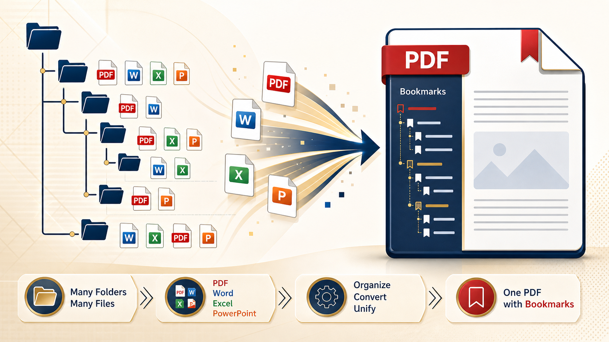
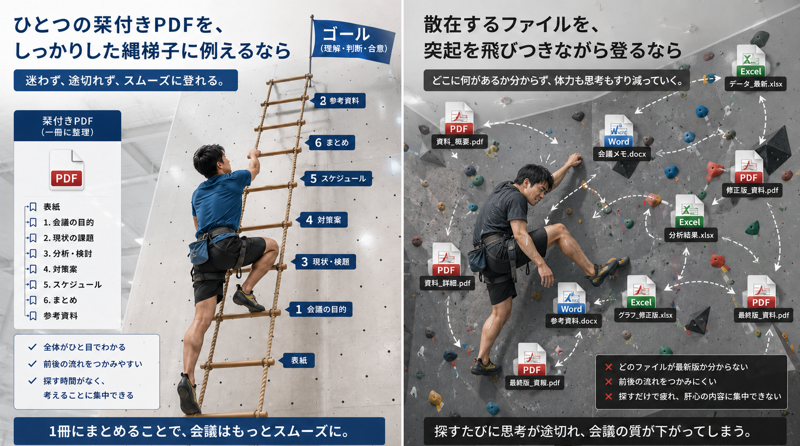
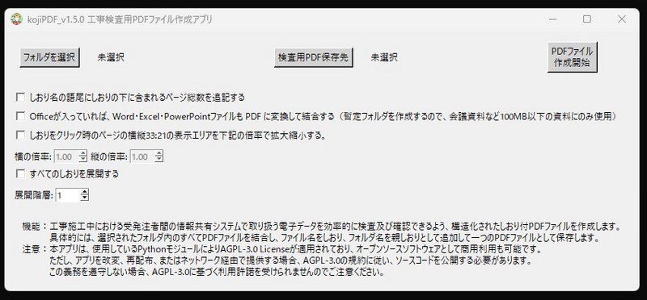

1
結合したい資料フォルダを選ぶ
「フォルダ選択」から、PDFやOfficeファイルが入っている親フォルダを指定します。

サブフォルダまで読み取り、資料一式をまとめて処理できます。
フォルダ名を親しおり、ファイル名を子しおりとして追加します。
Word・Excel・PowerPointをPDFに変換してから結合できます。
kojiPDFは、ペーパーレス会議資料の作成に使えるPDFツールです。選択したフォルダ内のPDFを結合し、ファイル名とフォルダ名を使って、しおり付きPDFとして保存できます。Word・Excel・PowerPointのPDF変換にも対応しています。
数万枚に及ぶ工事関係書類の電子検査という、究極のペーパーレス会議を実現するために、工事関係者が個人で開発した、誰でも使えるオープンソースのPDFツールです。ソースコードも公開しています。
SignPath Foundationのコード署名※取得を目指しています。応援として、Vectorでの評価やGitHubスターをいただけると助かります。
紙の資料は、全体の分量や、いま説明されている位置がすぐにわかります。しかし、多種類のファイルが大量に入った会議資料では、全体像や現在位置が見えにくくなり、確認のために印刷したくなってしまいます。
本来の目的は「内容の理解」なのに、探すことに時間を取られてしまう…
紙を使わずに仕上げたいのに、確認のために印刷が必要になってしまう…
KojiPDFは、散在するファイルを栞付きの一冊のPDFにまとめます。紙の資料で見えていた「ゴール（全体の分量）」と「自分の場所（いま見ている位置）」を、つかみやすくします。読む側は栞をたどるだけで必要な資料へ移動でき、作る側は作成段階で何度でも一冊のPDFにまとめて、資料の流れを確認できます。

kojiPDFは、工事関係者が個人で開発しているオープンソースソフトウェアです。有料の商用ソフトではなく、ペーパーレス会議や電子検査を少しでも使いやすくするために作っている、誰でも使えるPDFツールです。
一方で、個人が作ったばかりのWindowsアプリは、ダウンロード時やインストール時にウィルス警告やSmartScreenの警告が表示されることがあります。これは、必ずしもアプリが危険という意味ではありません。
Windowsやセキュリティソフトは、アプリの中身だけでなく、発行元の署名、配布実績、ダウンロード数、利用者からの評価、過去の検出履歴なども参考にしています。市販ソフトや定評のあるOSSでは、有料のコード署名証明書や長年の利用実績によって信頼されやすくなっています。しかし、個人開発の新しいアプリでは、そうした信頼情報がまだ少ないため、警告が出やすくなります。
kojiPDFでも、現時点では高価な有料コード署名を取得できておらず、SignPath FoundationのようなOSS向け署名サービスについても、プロジェクトの知名度や利用実績が不足しているため、すぐに利用することは難しい状況です。
そのため、警告を完全に消すことはまだ難しいですが、利用者がご自身で確認できる材料をできるだけ公開しています。配布ファイルのSHA256、GitHub Releases、GitHub Actionsのビルド履歴、公開しているソースコード、VirusTotalの検査結果を確認できるようにしています。
これらは安全性を完全に保証するものではありません。しかし、「どのファイルを配布しているか」「そのファイルが改ざんされていないか」「どのようにビルドされているか」「検査時点で主要なセキュリティベンダーに検出されているか」を確認するための客観的な情報です。
工事関係書類の電子化には、苦労して取り組んだ。しかし、書類検査では電子データのままでは実用にならず、結局すべて紙で出力せざるを得なかった。紙で出すなら、電子化する意味はあるのか。そんなジレンマに陥っていた。
何百ものフォルダ。数千ものPDFファイル。整理や保存には便利でも、工事の書類検査では「必要な資料を、その場ですぐに出せること」が求められる。
指示された資料を見せるため、そのたびにフォルダを開き、ファイルを探し、別のPDFを読み込む――。電子化されたはずなのに、検査では紙のほうが速い。いや、電子データでは遅すぎて、紙でなければ検査にならない。
では、どうすれば電子データのまま検査に使えるのか。答えは見えていた。すべての資料がひとつの「しおり付きPDF」になっていれば、再読み込みを待つことなく、クリックひとつで目的の資料へたどり着ける。
しかし、大量の資料からひとつのしおり付きPDFを作るのは、とても手間のかかる作業だった。毎回、手作業でできるものではない。
「すべてのPDFを結合して、フォルダ名とファイル名から、自動でしおりを作ってくれるアプリはないのか。」探しても見つからない。それなら、自分で作るしかない。
そうして生まれたのが、kojiPDFだ。当時公開されたばかりの生成AIに助けられながら、試行錯誤を重ね、夢中で作り上げた。
その後、このアプリが工事検査だけでなく、ペーパーレス会議にも役立つことに気づき、Word・Excel・PowerPointの自動PDF変換、用紙サイズの統一、透過ページ番号などの機能を加え、少しずつ育ててきた。
kojiPDFは、大量の電子化資料を効率よく閲覧するために生まれたツールだ。見たい資料に、すぐたどり着けるように。大量の資料を、紙に戻さず扱えるように。
実際の操作順をそのまま確認できます。画面を見ながら、上から順に進めればPDFを作成できます。
「フォルダ選択」から、PDFやOfficeファイルが入っている親フォルダを指定します。
「出力PDF」で、完成したPDFを保存する場所と名前を設定します。
しおり、ページ番号、用紙サイズ、Office変換など、必要な項目を選びます。
最後に赤い「作成」ボタンを押すと、しおり付きPDFとして保存されます。
